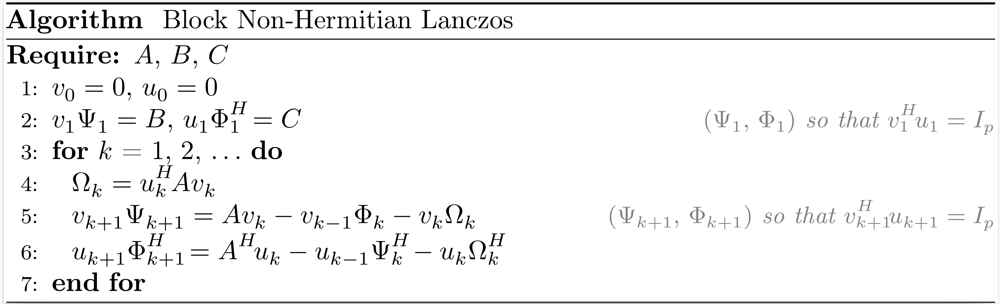

Block Krylov processes
Block Hermitian Lanczos
If the vector $b$ in the Hermitian Lanczos process is replaced by a matrix $B$ with $p$ columns, we can derive the block Hermitian Lanczos process.

After $k$ iterations of the block Hermitian Lanczos process, the situation may be summarized as
\[\begin{align*} A V_k &= V_{k+1} T_{k+1,k}, \\ V_k^H V_k &= I_{pk}, \end{align*}\]
where $V_k$ is an orthonormal basis of the block Krylov subspace $\mathcal{K}_k^{\square}(A,B)$,
\[T_{k+1,k} = \begin{bmatrix} \Omega_1 & \Psi_2^H & & \\ \Psi_2 & \Omega_2 & \ddots & \\ & \ddots & \ddots & \Psi_k^H \\ & & \Psi_k & \Omega_k \\ & & & \Psi_{k+1} \end{bmatrix}.\]
Krylov.hermitian_lanczos — MethodV, T = hermitian_lanczos(A, B, k)Input arguments
A: a linear operator that models an Hermitian matrix of dimension n;B: a matrix of size n × p;k: the number of iterations of the block Hermitian Lanczos process.
Output arguments
V: a dense n × p(k+1) matrix;T: a sparse p(k+1) × pk block tridiagonal matrix with a bandwidth p.
Block Non-Hermitian Lanczos
If the vectors $b$ and $c$ in the non-Hermitian Lanczos process are replaced by matrices $B$ and $C$ with both $p$ columns, we can derive the block non-Hermitian Lanczos process.

After $k$ iterations of the block non-Hermitian Lanczos process, the situation may be summarized as
\[\begin{align*} A V_k &= V_{k+1} T_{k+1,k}, \\ A^H U_k &= U_{k+1} T_{k,k+1}^H, \\ V_k^H U_k &= U_k^H V_k = I_{pk}, \end{align*}\]
where $V_k$ and $U_k$ are bases of the block Krylov subspaces $\mathcal{K}^{\square}_k(A,B)$ and $\mathcal{K}^{\square}_k (A^H,C)$, respectively,
\[T_{k+1,k} = \begin{bmatrix} \Omega_1 & \Phi_2 & & \\ \Psi_2 & \Omega_2 & \ddots & \\ & \ddots & \ddots & \Phi_k \\ & & \Psi_k & \Omega_k \\ & & & \Psi_{k+1} \end{bmatrix} , \qquad T_{k,k+1}^H = \begin{bmatrix} \Omega_1^H & \Psi_2^H & & \\ \Phi_2^H & \Omega_2^H & \ddots & \\ & \ddots & \ddots & \Psi_k^H \\ & & \Phi_k^H & \Omega_k^H \\ & & & \Phi_{k+1}^H \end{bmatrix}.\]
Krylov.nonhermitian_lanczos — MethodV, T, U, Tᴴ = nonhermitian_lanczos(A, B, C, k)Input arguments
A: a linear operator that models a square matrix of dimension n;B: a matrix of size n × p;C: a matrix of size n × p;k: the number of iterations of the block non-Hermitian Lanczos process.
Output arguments
V: a dense n × p(k+1) matrix;T: a sparse p(k+1) × pk tridiagonal matrix with a bandwidth p;U: a dense n × p(k+1) matrix;Tᴴ: a sparse p(k+1) × pk tridiagonal matrix with a bandwidth p.
Block Arnoldi
If the vector $b$ in the Arnoldi process is replaced by a matrix $B$ with $p$ columns, we can derive the block Arnoldi process.

After $k$ iterations of the block Arnoldi process, the situation may be summarized as
\[\begin{align*} A V_k &= V_{k+1} H_{k+1,k}, \\ V_k^H V_k &= I_{pk}, \end{align*}\]
where $V_k$ is an orthonormal basis of the block Krylov subspace $\mathcal{K}_k^{\square}(A,B)$,
\[H_{k+1,k} = \begin{bmatrix} \Psi_{1,1}~ & \Psi_{1,2}~ & \ldots & \Psi_{1,k} \\ \Psi_{2,1}~ & \ddots~ & \ddots & \vdots \\ & \ddots~ & \ddots & \Psi_{k-1,k} \\ & & \Psi_{k,k-1} & \Psi_{k,k} \\ & & & \Psi_{k+1,k} \end{bmatrix}.\]
Krylov.arnoldi — MethodV, H = arnoldi(A, B, k; reorthogonalization=false)Input arguments
A: a linear operator that models a square matrix of dimension n;B: a matrix of size n × p;k: the number of iterations of the block Arnoldi process.
Keyword arguments
reorthogonalization: reorthogonalize the new matrices of the block Krylov basis against all previous matrices.
Output arguments
V: a dense n × p(k+1) matrix;H: a dense p(k+1) × pk block upper Hessenberg matrix with a lower bandwidth p.
Block Golub-Kahan
If the vector $b$ in the Golub-Kahan process is replaced by a matrix $B$ with $p$ columns, we can derive the block Golub-Kahan process.
After $k$ iterations of the block Golub-Kahan process, the situation may be summarized as
\[\begin{align*} A V_k &= U_{k+1} B_k, \\ A^H U_{k+1} &= V_{k+1} L_{k+1}^H, \\ V_k^H V_k &= U_k^H U_k = I_{pk}, \end{align*}\]
where $V_k$ and $U_k$ are bases of the block Krylov subspaces $\mathcal{K}_k^{\square}(A^HA,A^HB)$ and $\mathcal{K}_k^{\square}(AA^H,B)$, respectively,
\[B_k = \begin{bmatrix} \Omega_1 & & & \\ \Psi_2 & \Omega_2 & & \\ & \ddots & \ddots & \\ & & \Psi_k & \Omega_k \\ & & & \Psi_{k+1} \\ \end{bmatrix} , \qquad L_{k+1}^H = \begin{bmatrix} \Omega_1^H & \Psi_2^H & & & \\ & \Omega_2^H & \ddots & & \\ & & \ddots & \Psi_k^H & \\ & & & \Omega_k^H & \Psi_{k+1}^H \\ & & & & \Omega_{k+1}^H \\ \end{bmatrix}.\]
Krylov.golub_kahan — MethodV, U, L = golub_kahan(A, B, k)Input arguments
A: a linear operator that models a matrix of dimension m × n;B: a matrix of size m × p;k: the number of iterations of the block Golub-Kahan process.
Output arguments
V: a dense n × p(k+1) matrix;U: a dense m × p(k+1) matrix;L: a sparse p(k+1) × p(k+1) block lower bidiagonal matrix with a lower bandwidth p.
Block Saunders-Simon-Yip
If the vectors $b$ and $c$ in the Saunders-Simon-Yip process are replaced by matrices $B$ and $C$ with both $p$ columns, we can derive the block Saunders-Simon-Yip process.

After $k$ iterations of the block Saunders-Simon-Yip process, the situation may be summarized as
\[\begin{align*} A U_k &= V_{k+1} T_{k+1,k}, \\ A^H V_k &= U_{k+1} T_{k,k+1}^H, \\ V_k^H V_k &= U_k^H U_k = I_{pk}, \end{align*}\]
where $\begin{bmatrix} V_k & 0 \\ 0 & U_k \end{bmatrix}$ is an orthonormal basis of the block Krylov subspace $\mathcal{K}^{\square}_k \left(\begin{bmatrix} 0 & A \\ A^H & 0 \end{bmatrix}, \begin{bmatrix} B & 0 \\ 0 & C \end{bmatrix}\right)$,
\[T_{k+1,k} = \begin{bmatrix} \Omega_1 & \Phi_2 & & \\ \Psi_2 & \Omega_2 & \ddots & \\ & \ddots & \ddots & \Phi_k \\ & & \Psi_k & \Omega_k \\ & & & \Psi_{k+1} \end{bmatrix} , \qquad T_{k,k+1}^H = \begin{bmatrix} \Omega_1^H & \Psi_2^H & & \\ \Phi_2^H & \Omega_2^H & \ddots & \\ & \ddots & \ddots & \Psi_k^H \\ & & \Phi_k^H & \Omega_k^H \\ & & & \Phi_{k+1}^H \end{bmatrix}.\]
Krylov.saunders_simon_yip — MethodV, T, U, Tᴴ = saunders_simon_yip(A, B, C, k)Input arguments
A: a linear operator that models a matrix of dimension m × n;B: a matrix of size m × p;C: a matrix of size n × p;k: the number of iterations of the block Saunders-Simon-Yip process.
Output arguments
V: a dense m × p(k+1) matrix;T: a sparse p(k+1) × pk tridiagonal matrix with a bandwidth p;U: a dense n × p(k+1) matrix;Tᴴ: a sparse p(k+1) × pk tridiagonal matrix with a bandwidth p.
Block Montoison-Orban
If the vectors $b$ and $c$ in the Montoison-Orban process are replaced by matrices $D$ and $C$ with both $p$ columns, we can derive the block Montoison-Orban process.

After $k$ iterations of the block Montoison-Orban process, the situation may be summarized as
\[\begin{align*} A U_k &= V_{k+1} H_{k+1,k}, \\ B V_k &= U_{k+1} F_{k+1,k}, \\ V_k^H V_k &= U_k^H U_k = I_{pk}, \end{align*}\]
where $\begin{bmatrix} V_k & 0 \\ 0 & U_k \end{bmatrix}$ is an orthonormal basis of the block Krylov subspace $\mathcal{K}^{\square}_k \left(\begin{bmatrix} 0 & A \\ B & 0 \end{bmatrix}, \begin{bmatrix} D & 0 \\ 0 & C \end{bmatrix}\right)$,
\[H_{k+1,k} = \begin{bmatrix} \Psi_{1,1}~ & \Psi_{1,2}~ & \ldots & \Psi_{1,k} \\ \Psi_{2,1}~ & \ddots~ & \ddots & \vdots \\ & \ddots~ & \ddots & \Psi_{k-1,k} \\ & & \Psi_{k,k-1} & \Psi_{k,k} \\ & & & \Psi_{k+1,k} \end{bmatrix} , \qquad F_{k+1,k} = \begin{bmatrix} \Phi_{1,1}~ & \Phi_{1,2}~ & \ldots & \Phi_{1,k} \\ \Phi_{2,1}~ & \ddots~ & \ddots & \vdots \\ & \ddots~ & \ddots & \Phi_{k-1,k} \\ & & \Phi_{k,k-1} & \Phi_{k,k} \\ & & & \Phi_{k+1,k} \end{bmatrix}.\]
Krylov.montoison_orban — MethodV, H, U, F = montoison_orban(A, B, D, C, k; reorthogonalization=false)Input arguments
A: a linear operator that models a matrix of dimension m × n;B: a linear operator that models a matrix of dimension n × m;D: a matrix of size m × p;C: a matrix of size n × p;k: the number of iterations of the block Montoison-Orban process.
Keyword arguments
reorthogonalization: reorthogonalize the new matrices of the block Krylov basis against all previous matrices.
Output arguments
V: a dense m × p(k+1) matrix;H: a dense p(k+1) × pk block upper Hessenberg matrix with a lower bandwidth p;U: a dense n × p(k+1) matrix;F: a dense p(k+1) × pk block upper Hessenberg matrix with a lower bandwidth p.